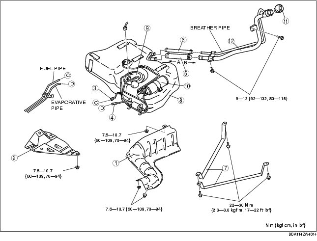
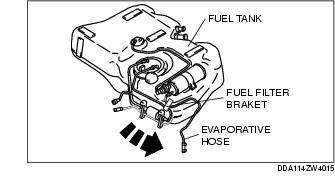
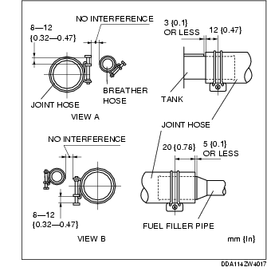

Fuel tank removal/installation [ZY]
- • Repairing a fuel tank that has not been properly steam cleaned can be dangerous. Explosion or fire may cause death or serious injury. Always properly steam clean a fuel tank before repairing it.
- • A person charged with static electricity could cause a fire or explosion, resulting in death or serious injury. Before draining fuel, make sure to discharge static electricity by touching a vehicle.
- • If there is foreign material on the connecting area of the quick release connector, it might damage the connector or fuel pipe. To prevent this, disconnect the connector and clean the connecting area before connecting.
1. Level the vehicle.
2. Complete the "BEFORE REPAIR PROCEDURE". (See BEFORE SERVICE PRECAUTION [ZY].)
3. Disconnect the negative battery cable.
4. Drain the fuel using the following procedure.
- (1) Disconnect the breather hose (when the fuel tank is full) or the joint hose (except when the fuel tank is full) from the fuel-filler pipe.
- (2) Drain the fuel by tilting the breather hose (when the fuel tank is full) or the joint hose (except when the fuel tank is full).
- (3) Siphon the fuel from the fuel tank using a fuel drawing pump.
5. Remove the silencer. (See EXHAUST SYSTEM REMOVAL/INSTALLATION [ZY].)
6. Remove the crossmember and the member. (See EXHAUST SYSTEM REMOVAL/INSTALLATION [ZY].)
7. Remove the TWC rubber hangers and lower the TWC to where the insulator can be removed.
8. Remove in the order indicated in the table.
9. Install in the reverse order of removal.
10. Complete the "AFTER REPAIR PROCEDURE". (See AFTER SERVICE PRECAUTION [ZY].)

.
|
1
|
Insulator
|
|
2
|
Fuel hose protector
|
|
3
|
Quick release connector
|
|
4
|
Evaporative hose
|
|
5
|
Joint hose
(See Joint Hose Installation Note.)
|
|
6
|
Breather hose
|
|
7
|
Strap
|
|
8
|
Fuel tank assembly
|
|
9
|
Fuel pump unit
|
|
10
|
Charcoal canister
|
|
11
|
Fuel-filler cap
|
|
12
|
Fuel-filler pipe
|
Evaporative Hose Removal Note
1. Disengage the disconnected evaporative hose from the fuel filter (high-pressure) bracket and set it out of the way as shown in the figure.

Fuel Tank Assembly Removal Note
- • To avoid damaging the fuel hose, charcoal canister and other parts, do not forcefully raise the fuel tank component and carefully move the hoses out the way when removing.
1. Carefully lower (30-60mm) the fuel tank component and disconnect the fuel pump unit connector.
Fuel-filler pipe Removal Note
1. Set the auto leveling sensor out of the way. (See AUTO LEVELING SENSOR REMOVAL/INSTALLATION.)
Breather Hose Installation Note
1. Install the breather hose and clamps as shown in the figure.

Joint Hose Installation Note
1. Verify that there is no damage to the nonreturn valve built into the fuel-filler pipe.
2. Install the joint hose and clamps as shown in the figure.

Evaporative Hose Installation Note
1. Push the evaporative hose onto the evaporative pipe unit it reaches the stopper.
2. Assemble the clamp with the tabs pointing sideward.
3. Install the clamp by aligning it with the clamp marks remaining on the hose.